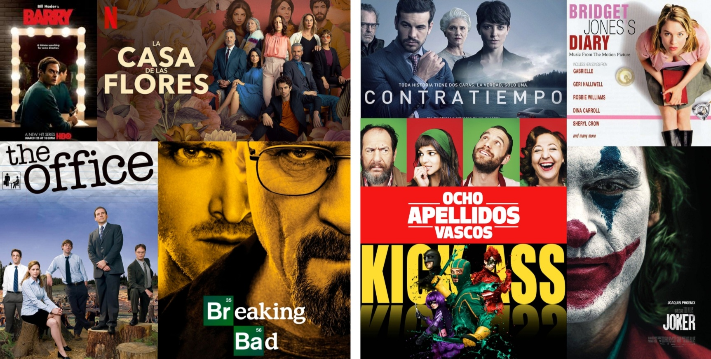
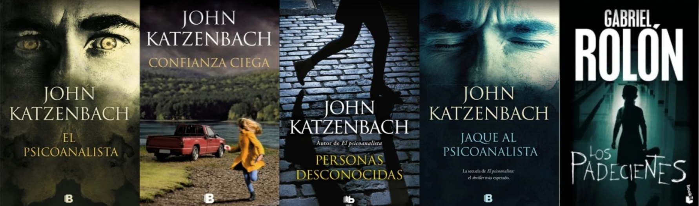

Al comienzo de la cuarentena en 2020, descubrí una nueva pasión: la pastelería a base plantas. Comencé probando nuevas recetas con ingredientes que jamás habia usado, ni sabia de su existencia. Los resultados con el tiempo fueron mejorando y hoy en dia es algo que me relaja y disfruto de hacerlo. Demás esta aclarar, que estas bellas fotos, son de la página de la cual incorpore las recetas, ya que mis delicias nunca llegaron para la foto
En mis tiempos libres de estudio y trabajo, me gusta ver peliculas, series y leer libros (más especificamente los de género “Thriler psicológico”). Creo que una forma de conocer a las personas, es a través de sus gustos, pasatiempos, y estos son los mios!. A continuación, van mis recomendaciones.
 